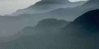
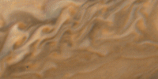

| The Cantor set, the Koch curve, The Sierpinski gasket and carpet, the
Menger sponge, Julia sets, Brownian motion trails, ... these mathematical constructions
that now are examples of fractals, have been known for a long time. |
| Part of Benoit
Mandelbrot's brilliance lay in organizing these ideas into a coherent field, but
perhaps a larger contribution lay in recognizing these ideas constituted a powerful
organizing principle for natural phenomena. |
| Before the development of fractal
geometry, typically |
| Nature was regarded as noisy Euclidean geometry. |
| For example, a mountain
is primarily a roughened cone.
The clearest statement of this view may have been given in
Paul Cezanne's
instructions to young painters: |
| "Everything in Nature can be viewed in terms of
cones, cylinders, and spheres." |
| In contrast to this,
Mandelbrot asserts, |
| | "Clouds are not spheres, mountains are not cones, coastlines are not circles,
and bark is not smooth, nor does lightning travel in a straight line." | |
|
| Here are a few examples, among many, Many, MANY more. |
| Ammonites are extinct relatives of the
nautilus. The sutures where the internal chamber walls meet the outer shell are
fractal curves. Is the suture dimension related to the evolutionary stage of the ammonite? |
 |
| Coastlines are natural fractals, among
the first recognized. We describe the complications that arise from trying to
answer the simple question, "How long is a coastline?" |
 |
| Earthquakes: While fractal characteristics can
be found in the spatial distribution of earthquakes, and perhaps in the underlying geological
structures that cause them, we focus on scaling laws in the distribution of earthquake sizes. |
 |
| Rivers are good examples of natural fractals, because
of their tributary networks (branches off branches off branches) and their complicated
winding paths. |
 |
| Mountains are the result of tecktonic forces
pushing them up and weahtering breaking them down. Little surprise they are well-described
by fractals. |
 |
| Gallery of natural fractals Some pictures taken from
various sources, mostly clip art files. |
 |
|